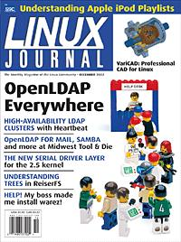

Shutdown Archive web server
Search:
Linux Journal
Issue #104/December 2002

Features
Highly Available LDAP
by Cliff White and Jay D. Allen and Cliff White
You can have uninterrupted LDAP service, using freely available software.
Process Accounting
by Keith Gilbertson
Here's a way the kernel and some simple utilities work together to track processes and help you find performance and security issues.
OpenLDAP Everywhere
by Craig Swanson and Matt Lung
A single company-wide directory service offers mail address lookup and file sharing to Linux and Windows users.
Indepth
Playing with ptrace, Part II
by Pradeep Padala
In part two of our series on ptrace, find out how to set breakpoints and change the code of a running process on the fly.
Linux Powers Four-Wall 3-D Display
by Douglas B. Maxwell
With the aid of a custom video switcher, a Linux cluster beats an expensive proprietary UNIX system for high-end virtual reality.
Learning the iTunesDB File Format
by Patrick Crosby
iPods aren't just for people who use computers from Mattel, no wait, Apple. Here's the playlist format. Don't all buy iPods at once, folks.
Embedded
Driving Me Nuts The Serial Device Layer
by Greg Kroah-Hartman
Toolbox
Kernel Korner
Trees in the Reiser4 Filesystem, Part I
by Hans Reiser
At the Forge
Creating OpenACS Packages
by Reuven M. Lerner
Cooking with Linux
A Process Smorgasbord
by Marcel Gagné
Paranoid Penguin
Configuring and Using an FTP Proxy
by Mick Bauer
Columns
Focus on Software
On System Administrators
by David A. Bandel
IAAL: The Ethical System Administrator
by Lawrence Rosen
Linux for Suits
Identity as Business Opportunity?
by Doc Searls
Reviews
VariCAD 8.2-02
by Michael Baxter
Departments
Letters
upFRONT
From the Editor
On the Web
Best of Technical Support
New Products
Archive Index
Shutdown Archive web server
Search:
Copyright © 1994 - 2018
Linux Journal
. All rights reserved.